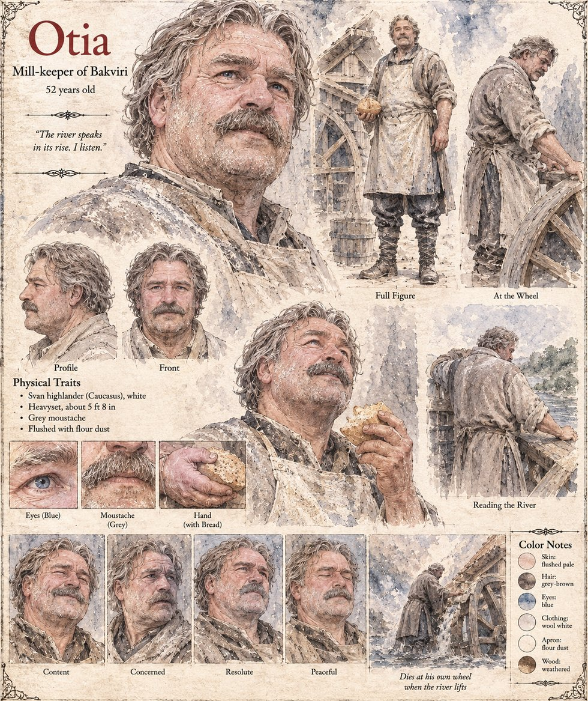

Otia
Mill-keeper of Bakviri · reader of the river by the pitch of the wheel · 52
A mill-keeper in the gorge of Bakviri, where the vineyards hang on ropes and the mills are strung along the river below the Warden’s tower like beads. He is fifty-two. On the clear noon of the eighth of Deyren he stands in his doorway, as he has stood every noon of his life, eating a heel of barley bread over the wheel for luck. He has grown up in the sound of the river and can tell its mood by the pitch of the wheel. At noon the wheel changes pitch. The water drops, then rises, and he thinks the Mother has relented, rain on the high snows, and looks up to thank her, and there is no cloud. He had never in his life seen a river rise the way this one was rising, which was not like water rising but like something being lifted, by hand, and carried.
It is the Son’s arrow, loosed by the king for a flood along the mule track to the tower, and Interlude III logs it as fulfilled to the letter. Nineteen hundred die in two hours, and the barricades go down to the wide water and the mills, and Otia’s bread. The manuscript does not say in so many words that he dies; it gives the wheel and the bread, and nothing of him after. His Warden, Zurab, comes down four days later with the Mother’s arrow in his hands.
The manuscript gives his age, his bread, his wheel and his reading of the river. The sheet’s heavyset build of about 5 ft 8 in, flushed complexion with flour dust, grey-brown curly hair, grey moustache, blue eyes, white wool shirt and flour-dusted apron are its own, as are its panels Content, Concerned, Resolute and Peaceful and its scenes At the Wheel, Reading the River and Dies at his own wheel when the river lifts, which is the sheet’s reading of what the manuscript leaves open. The line it prints for him, The river speaks in its rise. I listen., is not in the manuscript.
“like something being lifted, by hand, and carried”
Appears In

Related Subjects


Related Records

At noon on the clear day of the eighth of Deyren in the thirtieth year, Otia, the mill-keeper, fifty-two, stands in his doorway eating a heel of barley bread over the wheel for luck, as he has every noon of his life. The water drops and then rises like something lifted by hand; he looks up to thank the Mother for rain, and there is no cloud. Nineteen hundred people die in the gorge in two hours, with the barricades, the mills and Otia’s bread; the tower holds.